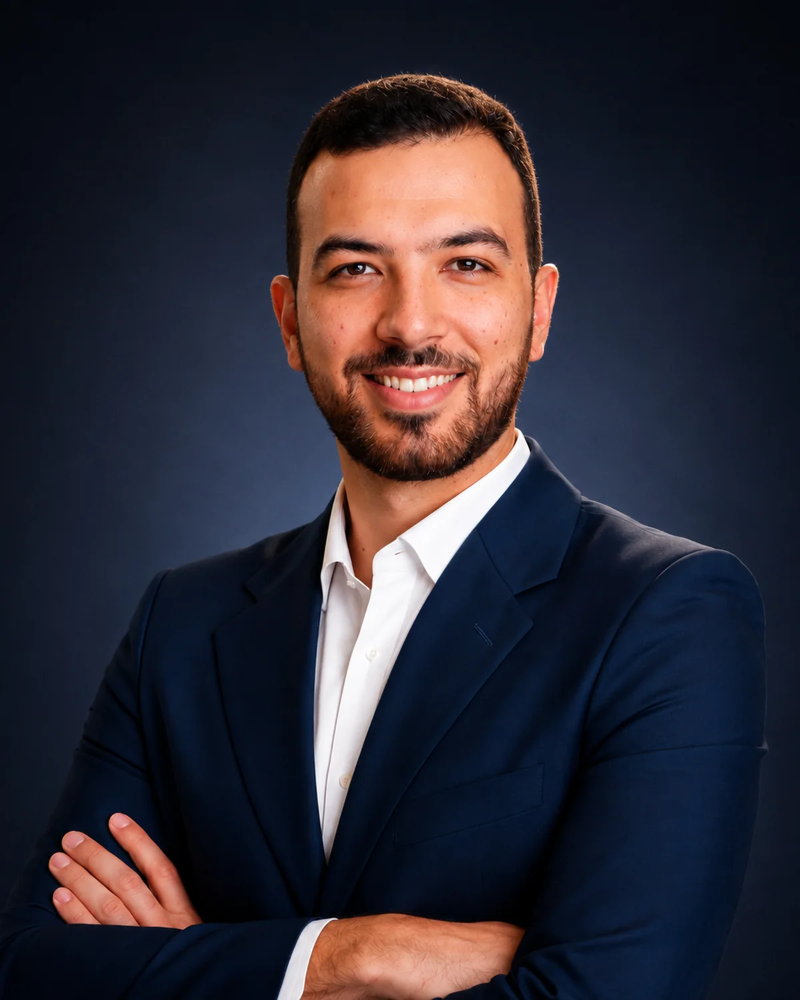

Enterprise Infrastructure Architecture
Shaping target-state platforms that align infrastructure decisions with business priorities, risk, growth and operational needs.
I architect and lead secure, resilient enterprise platforms across cloud, hybrid and on-premises environments.
From greenfield banking platforms and disaster recovery to regional infrastructure and cloud modernization, I turn complex requirements into practical architectures that perform in the real world.

I am an Enterprise Infrastructure Architect with experience leading mission-critical initiatives across banking, professional services and digital forensics environments.
My work spans OCI, Azure and enterprise data centers, combining architecture, modernization, networking, resilience, operational excellence and technical leadership. I remain close to implementation because strong architecture must work beyond the diagram.
I lead design discussions, align internal teams and external technology partners, challenge assumptions when reality requires a better answer, and take ownership of complex delivery and troubleshooting.
Technology is the enabler. The real value is creating infrastructure that is resilient, scalable, governed and ready to operate.
Shaping target-state platforms that align infrastructure decisions with business priorities, risk, growth and operational needs.
Designing secure and governed cloud and hybrid environments across OCI, Azure and enterprise data centers.
Transforming legacy estates through platform redesign, virtualization, migration, standardization and automation.
Architecting connectivity, segmentation, routing and inspection models that support scale, security and regional operations.
Improving reliability through architecture reviews, root-cause analysis, observability, documentation and continuous improvement.
Leading design decisions and delivery across internal teams, application owners, administrators, security functions and vendors.
Four engagements that reflect how I approach transformation: understand the business need, shape the architecture, align stakeholders and carry the solution through delivery.
Architected and led the delivery of a mission-critical enterprise banking platform, establishing a secure, resilient and scalable foundation for business expansion, operational continuity and long-term growth.
Led a strategic cloud infrastructure modernization initiative focused on cost optimization while strengthening security, scalability, governance and operational flexibility.
Designed and delivered a production-ready regional infrastructure platform that strengthened operational resilience, enabled secure collaboration and established a scalable foundation for future growth.
Led continuous platform improvement initiatives focused on architecture maturity, operational excellence, service reliability and automation across enterprise environments.
A career built by moving progressively closer to the decisions that shape entire platforms.
Leading cloud, hybrid and on-premises architecture and modernization across regional Digital Forensics environments.
Led enterprise infrastructure architecture and the greenfield OCI banking platform for Saudi Arabia.
Delivered enterprise networking and troubleshooting across complex customer environments.
Built a strong foundation in infrastructure, networking and disciplined technical problem solving.
My approach combines strategic planning with hands-on technical leadership. I design for security, resilience, scalability and operational sustainability from the beginning, not as corrective work after deployment.
I also believe architecture must adapt to evidence. When implementation exposes a weak assumption, the right response is to improve the design, align stakeholders and move forward with a solution grounded in operational reality.
I am always open to conversations around enterprise architecture, cloud and hybrid modernization, platform resilience and technical leadership.